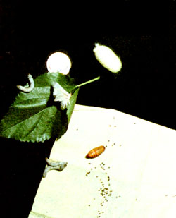
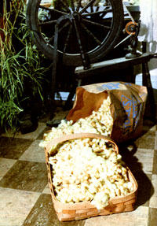
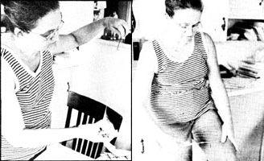

If you're tired of the same old arts-and-crafts scene and looking for an exciting, different part-time pursuit ... give some thought to the inexpensive, mysterious, Oriental practice of sericulture (or silkworm cultivation).
The knowledge needed to raise such tiny "livestock" has been handed (Own from generation to generation for centuries, and the silkworm ranks with the honeybee as one of the world's most profitable domestic insects.
Mary Stock (who lives in Canton, Ohio) started a silkworm farm more than four years ago, and she's been kind enough to share her knowledge with MOTHER's readers. In ancient China, revealing such silkworm secrets would probably have resulted in death by torture, and-even today-printed matter on the subject is hard to come by ... with most available texts written either in highly technical terms or in Oriental languages!
Ms. Stock says that-in sericulture at least-there's definitely no question about whether the moth or egg comes first ... it's the egg every time, and these "silkworm seeds" are very difficult to find. In fact, so few folks raise the little silkmaking machines nowadays that Mary had to do a good bit of searching before she located a supplier-Marguerite Shimmin (who lives at 2470 Queensbury Road, Pasadena, California 91104)-and bought 200 eggs from that lady for $2.00 ... which was all the money that the Ohioan had to invest to get her start in the silkworm business.
There is, however, one other requirement for successful sericulture: a ready supply of mulberry leaves. The most important variety-as far as hungry silkworms are concerned-is Morus alba, the white-fruited mulberry of China. This is a hardy tree that will grow in almost any soil, and worms fed on its leaves are said to produce the finest silk. Another popular species is the Morus nigra, or black-fruited mulberry, which is native to Italy and produces berries that make a great syrup or pie. You'll find, however, that the caterpillars will munch away on any kind of mulberry leaves you happen to have on hand. (Consult the last section of this article for information on where to buy mulberry seedlings.)
Three-year-old trees produce the best feed for silk production, and a healthy mulberry should yield from 20 to 30 pounds of leaves during the time your worms are in their growing stages. (That's about enough greenery to supply 100 wrigglers with chow for the 30 days-more or less-that they'll need food.)
You may be able to locate silkworm eggs through your local spinning and weaving organizations. It these sources don't pail out, though, you can write to Marguerite in Pasadena or Mary (at 3811 Lincoln Street East, Canton, Ohio 44707). Both women will be glad to share their knowledge and egg supplies, but be sure to send a self-addressed, stamped envelope-and at least $2.00-with any request for eggs or information.
Then, should your packet of "silkworm seeds" show up before the local mulberry trees are in leaf, keep the embryos at about 50°F (just place the paper towel or napkin-on which the eggs arrive-in a sealed jar, and store the container in the crisper compartment of your 'fridge) until it's time to hatch them.
Once your trees have produced a good supply of feed, it's time to "plant" your silk crop. Simply place the eggs-still on their paper-in any available container (such as a shoebox or dishpan) and put 'em in a warm, dry, well ventilated spot. It's very important to keep all the eggs, worms, cocoons, and moths out of drafts and direct sunlight ... but they do need plenty of fresh air, so it's best not to smoke around silkworms at any stage of their development. The temperature of the incubating box should be increased gradually over a couple of days, and then 'maintained as nearly constant as possi ble ... anywhere from 68 to 77°F will do.
After three to ten days in the box (de pending on warmth, humidity, and other factors) the majority of your eggs will hatch within one ten-minute period ... usually during the early morning. This means that you can wake up to find that you have 200 very hungry mouths to feed! Any worms that don't hatch out with the first group probably won't put in their appearance until the following day. These late eggs should be placed in another box, since they'll be on a different molting and spinning schedule from the first-born
Keep in mind that your infant silkworms will be less than 1/8 of an inch long. Yet, one short month later the critters will have attained 10,000 times their initial weight ... and all that growth has to be fueled with mulberry leaves.
For your worms' early feedings, remove the leaf stems and use only the tenderest top-of-the-tree leaves (remember to strip the branches from the base to the tip ... in order not to tear the bark or injure new buds). Such "starter feed" should be chopped into 1/4-inch squares and-if there's even a chance that the bush has been sprayed-washed and thoroughly dried before the fodder is sprinkled evenly about the box. It's best to pick the leaves fresh each day, but an emergency supply can be stored in the crisper of your refrigerator ... if, again, the greens are dried out before they're offered to the hungry little critters.
The more your new charges eat, the bigger they'll get and the more food they'll require. If you underfeed the worms at any point, they may become so ravenous that they'll overeat at the next meal and make themselves sick ... while constant underfeeding can even lower the quality of their silk! The trick is to give your worms adequate, regular feedings, never let them run out of food, and always remove old, wilted leaf pieces from the box.
In addition, the silkworms will be healthier if you clean their "litter"-by sliding in fresh, dry pieces of paper and removing (to the compost pile) the soiled sheets-regularly. When this isn't done, molds can form that could give rise to a number of worm diseases.
Though the caterpillars seem to eat more in the mornings and evenings, they're actually chowing down at all hours. The only times the worms will stop chewing are during their four molting periods ... which occur about every five or six days.
Shortly before each molt, the heads of the worms will swell, their skins will lose color, and their bodies will become transparent and immobile. (It's extremely important that the larvae aren't moved or disturbed in any way at this time.) During the 24-hour "skin-shedding process" your wigglers will go into a sleep and lose all interest in food. Otherwise, their appetites are regular and enormous.
Mary Stock reports that silkworms get especially voracious in the last week before they start to spin. While in this stage her 10,000 charges consume two and a half bushels of mulberry leaves a day, and-though Mary already has 15 trees on her 25-acre farm-she's in the process of planting 25 additional seedlings! (Besides providing worm food, the trees make great windbreaks and produce quantities of useful berries.)
As the caterpillars increase in size, divide the brood into several containers. Each individual needs space to grow ... and you'll want to avoid conditions that force the critters to Crawl over each other, because their velvet skins are so delicate that even silkworm feet can tear them. When you transfer the fragile larvae, it's best to wait until they climb onto their food and then remove each wormleaf and all-to new quarters.
Once the "spinning time" approaches (after three weeks or so) provide containers with lots of edges, so your wiggly weavers can quickly set up the "guide wires" from which they'll hang their silken shelters. A number of small strawberry boxes or egg cartons will be fine for this purpose.
Then suddenly-anywhere from 25 to 32 days after hatching-your caterpillars will stop eating and start to produce silk.
You'll be able to tell when a worm is ready to spin, because it will appear sluggish. Often the critter's head will move from side to side as it seeks a suitable location for its new home. (Since the larvae have no eyes, try to make sure that they don't have to travel far to find a suitable corner.)
A silkworm "sets up shop" by secreting a filament from an orifice located just below its mouth. As strands leave this opening, they make contact with another secretion called sericin which becomes sticky when it's exposed to the air. This "glue" allows the incredible little workers to set their guide wires and shape their cocoons.
After the caterpillar has anchored its crude hammock, it will lie on its back, double up its legs, contract its body, and force the filament from within. The small spinner won't take the easy way out and weave Its womb in circles from one end to the other. Instead-with its head bobbing and weaving at a rate of 69 times per minute-the amazing creature produces a pattern of figure eights, layer upon layer, until its shell is formed.
You'll soon lose sight of the hearty worker but will still be able to hear it spinning until its complete supply of body fluids-so magically created from mulberry leaves-is consumed. If you could see inside the finished case, you'd find that the once-plump, three-inch-long caterpillar has been transformed into a shriveled-up pupa of about 1-1/4 inches in length. The entire spinning process takes about three days, and it's a show that beats the stuffing out of anything on television!
While the tired pupa turns itself into a moth-a process that takes from ten days to two weeks-you'll have a decision to make: If you plan to raise silkworms again the following year, it'll be necessary to select some cocoons that will be allowed to complete their life cycles.
Naturally, it's necessary to choose a fairly equal number of males and females to carry on your line, and the best way to sex these critters is to take a close look at their protective envelopes. A male produces a structure that resembles a peanut slightly hour-glass in shape and somewhat pointed at the ends-while the "ladies" are most often found in larger, oval-shaped sheaths. Keep in mind that one moth lays from 300 to 400 eggs, and that 80 or 85% of those will hatch. Two dozen cocoons will, therefore (assuming that half of them contain females), yield enough "seed" to hatch about 3,000 crawlers.
The nests that you select as your "laying stock" should be removed from their boxes and set aside in separate, clean, dry containers. There's no trick to plucking the little silk houses from their moorings ... just tug 'em gently and they'll release. (Some waste silk will cling to the box and cocoon, though. Pull this material loose and save it, as it can be woven into a beautiful rough cloth called shantung.)
Traditionally, the rest of the cocoons which vary in color from light brown to creamy white ... with a little lemon and pale green thrown in-are harvested anywhere from seven to ten days after the caterpillar begins to spin. It's necessary to kill the pupas inside those nests that are to be used for silkmaking. (If you don't, the chrysalids will soon emerge as moths, and-during this process-the insects produce a solvent which destroys the continuous filament of the silk fiber.) The easiest way to accomplish this unpleasant but necessary task is to put the cocoons in a paper bag and place the sack in a 200° F oven for 20 minutes. Long exposure-at least six hours-to bright sun will also do the job.
After the pupas are killed, you can relax for a few days before you reel and spin your silk. But don't rest too long, or the material will take on a distinctive aroma from the dead chrysalids inside.
And what kind of harvest can you expect ? Well, perhaps not much the first year (it takes about 2,000 cocoons to produce a pound of raw silk, and some 350 to make a pair of stockings! ) but enough of a crop to see whether you really enjoy the art of sericulture.
One of the great things about harvesting silk is that most of it can be reeled directly from the cocoons with a simple homemade tool. Just find yourself two dark-colored pieces of paperboard-each about 10 inches square-and a short stick or clothespin. Cut a slot halfway to the center of each board, and interlock the two sections so they resemble the paddle wheel of a boat. Then, to make a "twirling" handle, clip a clothespin just above or below the intersection of the squares (or cut a slot in a dowel or stick and slip that handle in place).
Next, bring a small pan of water almost to a boil. (If you use a container with a dark interior, you'll find it easier to locate the filaments of silk.) When the liquid is ready, drop five to eight cocoons-depending upon how heavy you want your thread to be-into the, pan. Most commercial silk is eight strands thick but five fibers will also work well because the incredible strength of each strand is equal to (or greater than) that of a filament of steel of the same diameter!
After a few minutes the water will begin to dissolve the glue, and you'll see the tiny strings float away from the cocoons. Use tongs to catch the filaments, and-with one hand-twist them together in your fingers ... while your other hand slowly reels the thread onto the paperboard spool. When you get to the end and the pupas drop into the water, tie a small knot to keep the thread from unraveling. (Remember, you'll be winding 600 to 1,000 yards of silk, so start the job in the morning ... don't wait till an hour or so before bedtime! )
The reward for your (and the silkworms') labor is a thin, continuous thread of the finest material available. Silk weighs less than any natural fiber, yet a strand thinner than a human hair can be stretched five to six inches a yard and still return to its original length!
When we visited Mary Stock, she showed us the ancient art of "skin spinning" the waste silk. Here's how to do it: Take a short, straight piece of coat hanger and make a slight hook (about 1/4 inch Across) at one end. Then, use this tool to pull at the bundle of raw silk you've accumulated. As you separate a thin string of fibers from the mass, roll it on your leg to form a strand (as shown in the following black-and-white photos). You can also use a (hop spindle ... or even comb the waste silk with a cotton-card ing tool and spin it on a wheel. Remember that silk is an extremely fine fiber, though ... and must be handled with care.
The silkworm's sticky sericin-some of which will remain on the filaments-makes the thread a bit stiff and lackluster. However, it's best to weave the silk before you give it a final wash in mild soap and water to remove this gluey substance.
Meanwhile, back at the breeding box, you can watch the Bombyx m ori-the mulberry or silkworm moth-put in its brief appearance. The "great awakening" - as me Chinese called this eventtakes place as the moth secretes its alkaline saliva ... which softens the end of the cocoon and allows the adult insect to step into the world.
The wings of the male moth have a dis tinct sickle shape, and will soon dry and grow as the insect flaps them. The females can be easily identified by their larger abdomens. Neither sex able to fly, and the "ladies" rarely stray more than a few inches from their cocoons.
Since the moths are not equipped to eat and sustain themselves, mating and egg-laying take place soon after they emerge from their cocoons. Be prepared-by placing some paper towels in the nest boxes-to remove the sticky eggs with as little disturbance as possible. Should a moth lay its tiny treasures on a cocoon, just snip them off and place 'em with the other eggs dropped (you hope) on the paper. Then, let ,the new seed dry for a few days before you store it.
Following mating and reproduction, both sexes of moth will die within a few days ... which brings the silkworm story full circle. Take the poppy-seed- like eggs and place them in a small (labeled) jar to be saved-in the crisper compartment of your refrigerator- for next year's effort.
As a potential "worm rancher", you'd probably like to know what kind of profit you can expect from your work. Well, in terms of money from the sale of thread, the rewards probably won't amount to much ... unless you have groves of mulberry trees and a number of hands to help you out in spring and early summer. But, on the other hand, so little silk is produced in North America that the market is wide open, and there are other ways to turn your hobby into an income besides selling material!
Both Mary Stock and Marguerite Shimmin, for example, find themselves in great demand for sericulture lectures to schoolchildren, clubs, and craft groups. Marguerite is sometimes commissioned by museums to make repairs in old tapestries, and Mary tells us that her homegrown silk is snatched up by area weavers for around $35 a pound! So, despite the time and effort required to grow and harvest their silk crops, both of these women feel well rewarded for their labors.
In addition to any monetary gains, though, sericulture offers a rare opportunity to understand the workings of nature, and a chance to appreciate the time dedication involved in the mi raculous transformation from "mul berry leaves [to] satin". For many folks, those will be reasons enough to give silk worm cultivation a try.
If you're interested in pursuing the art of sericulture, but lack a source of mulberry leaves to feed your "livestock", you can prepare to start your own silk farm next year by ordering some seedlings of the necessary tree now! The Gurney Seed and Nursery Company (Dept. TMEN, Gurney Building, Yankton, South Dakota 57579) sells three- to four-foot-high, two-year-old trees for $5.55 apiece or $24.95 for five ... while J.E. Miller Nurseries, Inc. (Dept. TMEN, Canandaigua, New York 14424) offers four- to five-foot, two-year-old trees for $5.45 apiece, or two for $9.95.
|
 The tiny black spots you see here on Me tissue are eggs ... which will hatch into silkworms (shown munching on a mulberry leaf) in about three to ten days. After 30 days of grazin ~-during which the wrigglers each eat about a quarter pound of leaves and increase their initial weight by 10,000 times! these critters'll encase themselves in robes of silk, producing cocoons a little larger than a quarter. The fat, brown pupa (on the paper towel) that inhabits the cocoon will either be killed-by heating in the oven or (for a longer period of time) in the sun-and its covering harvested ... or the chrysalid will be allowed to hatch into the silkworm moth (again, perched on the leaf). Such adults will soon mate, reproduce, and die ... thereby completing their life cycle (the entirety of which-you'll notice-is shown in this photo!). |
 Mary has her work cut out for her here! That bag holds about 10,000 cocoons ... each of which is composed of 600 to 1,000 yards of thread. That's enough (all together) to produce about 5 pounds of raw silk, or about 30 pairs of silk stockings. |
 |